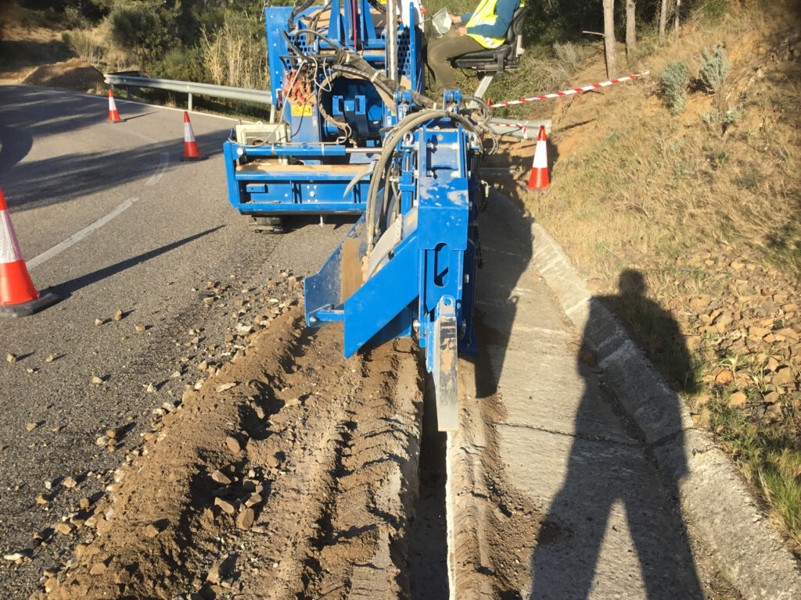
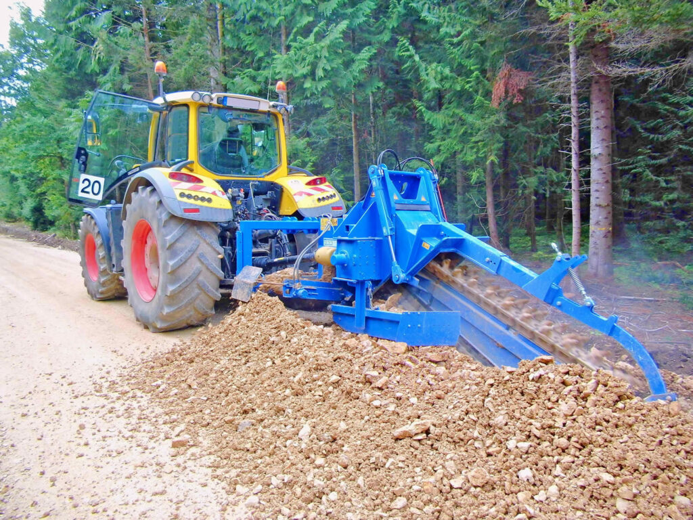

Der LIBA Maschinenpark.
Über 40 Grabenfräsen-Modelle — von der Baggeranbau-Fräse mit 200 mm Frästiefe bis zur Tiefenfräse mit 3.000 mm. Jede Maschine ist auf Trägergerät, Untergrund und Einsatzszenario hin entwickelt: kompromisslos auf Effizienz im Graben getrimmt. Made in Germany seit 1969.
Grabenfräsen für Bagger —
bis 1.400 mm Frästiefe
Die LIBA Baggeranbau-Grabenfräsen GM 140 H, GM 140 AFH-500 und GM 140 AFH-600 sind hydraulisch angetriebene Kettenfräsen für Mobil- und Kettenbagger ab 6 t. Frästiefen von 200 bis 1.400 mm, Fräsbreiten von 60 bis 400 mm — für Kabel-, Rohrleitungs- und Leitungsbau.
- 01GM 140 HGrabenfräse für Bagger ab 6 t. Frästiefe bis 900 mm, Fräsbreite 60–350 mm. Kompakt für Erdkabel und kommunalen Tiefbau.
- 02GM 140 AFH-500Mittlere Klasse für Rohrleitungs- und Kabelbau. Frästiefe bis 500 mm, Trägergerät ab 8 t.
- 03GM 140 AFH-600Erhöhte Frästiefe bis 600 mm für Pipeline-Verlegung DN 100–DN 200, Trägergerät ab 12 t.
| Frästiefe max. | bis 1.400 mm |
|---|---|
| Fräsbreite | 60–400 mm |
| Trägergerät | ab 6 t (Mobil- / Kettenbagger) |
| Antrieb | Hydraulisch über Bagger-Hydraulik |
| Anbau | Schnellwechsler-kompatibel |
 5 Modelle · ab 6 t Trägergerät
5 Modelle · ab 6 t Trägergerät
Grabenfräsen Schlepperanbau —
bis 1.800 mm Frästiefe
LIBA Schlepperanbau-Grabenfräsen für Heck- oder Frontanbau an Standard- und Spezial-Traktoren. Frästiefen von 300 mm (GM 1 AF, Erdkabel) bis 1.800 mm (GM 180 AF, Pipeline DN 300). 18 Modelle für Glasfaser-, Kabel-, Drainage- und Pipeline-Verlegung.
- 01GM 1 AS · GM 1 AFKompakt-Grabenfräsen für Erdkabel und Schmalgräben. Frästiefe bis 400 mm, Fräsbreite 40–100 mm.
- 02GM 140 AF · GM 160 AF · GM 160 ASMittelklasse für Drainage, Kabelbau und kommunale Aufgaben. Frästiefe bis 1.200 mm, Fräsbreite bis 300 mm.
- 03GM 180 AF · GM 600 RHigh-Performance-Grabenfräsen für Pipeline DN 300, Felsen und Glasfaser-Backbone. Frästiefe bis 1.800 mm.
| Frästiefe max. | bis 1.800 mm (GM 180 AF) |
|---|---|
| Fräsbreite | 40–500 mm je Modell |
| Trägergerät | Standardtraktor ab 60 kW |
| Anbau | Heck- oder Frontanbau, Kat. II/III |
| Antrieb | Zapfwelle / Hydraulik |
 18 Modelle · Schlepperanbau
18 Modelle · Schlepperanbau
Selbstfahrende Grabenfräsen —
bis 1.000 m Tagesleistung
Die LIBA Selbstfahrer-Grabenfräsen GM 4 Raupe, GM 4 Allrad und GM 6 ASR sind dieselhydraulische Eigenfahrer für Glasfaserausbau, Solarparks, Drainage und Felseinsatz. Tagesleistungen bis 1.000 m im Lockerboden — autark ohne Trägergerät.
- 01GM 4 RaupeSelbstfahrende Grabenfräse auf Raupenlaufwerk für FTTH-Glasfaser und Telekommunikation. Tagesleistung bis 1.000 m, Frästiefe bis 650 mm, Fräsbreite 50–150 mm.
- 02GM 4 AllradAllradgetriebene Grabenfräse für Sportplatzdrainage, Solarpark-Kabelgräben und Bewässerung. Minimale Oberflächenschäden.
- 03GM 6 ASRSelbstfahrende Felsfräse für Hartgestein bis FK IV. Frästiefe bis 800 mm in Kalkstein und Schiefer — wo Bagger und Trennsäge nicht wirtschaftlich sind.
| Tagesleistung max. | bis 1.000 m (Lockerboden) |
|---|---|
| Frästiefe | bis 800 mm je Modell |
| Fräsbreite | 50–200 mm |
| Antrieb | Dieselhydraulisch, eigenständig |
| Einsatz | Glasfaser, Solar, Drainage, Fels |
 3 Modelle · Selbstfahrer
3 Modelle · Selbstfahrer
Tiefenfräsen für Sondertiefbau —
bis 3.000 mm Frästiefe
Wenn Standard-Geometrien nicht reichen: Die LIBA Tiefenfräsen GM 250 H, GM 300 HF und GM 450 H erreichen Frästiefen bis 3.000 mm — für Sondertiefbau, Fernwärme-Verlegung und Entwässerungssysteme mit großem Querschnitt. Unimog-Adaptionen und kundenspezifische Anbauten auf Anfrage.
- 01GM 250 H · GM 300 H · GM 300 HFTiefenfräsen für Sondertiefbau: Frästiefe bis 2.000 mm, Fräsbreite bis 350 mm. Für Fernwärme und Entwässerung.
- 02GM 450 HMaximale Frästiefe bis 3.000 mm für anspruchsvollsten Tiefbau und Sonderprojekte. Hydraulischer Antrieb für präzise Tiefenkontrolle.
- 03UnimogfräseGrabenfräse adaptiert für Unimog U300–U530 — für kommunalen Tiefbau und Straßenbegleitgräben.
| Frästiefe max. | bis 3.000 mm (GM 450 H) |
|---|---|
| Fräsbreite | bis 350 mm |
| Trägergerät | Schwerlast-Bagger ab 20 t / Unimog |
| Antrieb | Hydraulisch, Hochdrucksystem |
| Einsatz | Fernwärme, Entwässerung, Sondertiefbau |

4+ Modelle · SpezialbauAnbaupflüge & Kabelpflüge —
ohne Aushub, ohne Verfüllen
LIBA Kabelpflüge und Anbaupflüge verlegen Erdkabel, Drainagerohre und Schutzrohre in einem Arbeitsgang — ohne offenen Graben, ohne Verfüllen. Verlegeleistungen bis 3.000 m/Tag in geeignetem Boden.
- 01GMV 100Vibrations-Anbaupflug für Schlepper und Traktoren. Verlegetiefe bis 600 mm, für Erdkabel und Drainagerohre bis DN 100.
- 02GMV 130Vibrationskabelpflug für großflächige Erdkabel-Verlegung. Verlegetiefe bis 800 mm, hohe Tagesleistung in sandigem Boden.
- 03GM 1800 PGroßpflug für Landschaftsbau und Tiefenverlegung bis 1.200 mm. Für Bewässerungs-, Drainage- und Energieprojekte mit großem Volumen.
| Verlegetiefe max. | bis 1.200 mm |
|---|---|
| Rohr-/Kabeldurchmesser | bis DN 150 |
| Trägergerät | Traktor ab 80 kW |
| Tagesleistung | bis 3.000 m (Lockerboden) |
| Einsatz | Erdkabel, Drainage, Bewässerung |

3 Modelle · PflügeHäufige Fragen
zu LIBA-Grabenfräsen.
Alles Wichtige zu Modellen, Einsatzgebieten, Frästiefen und Mietoptionen — direkt beantwortet vom Werk in Lingen.
Wie tief kann eine Grabenfräse fräsen?
Die Frästiefe hängt vom Modell ab. Kompakte Baggeranbau-Fräsen (GM 140 H) erreichen bis zu 900 mm. Schlepperanbau-Modelle wie die GM 180 AF fräsen bis 1.800 mm. Tiefenfräsen wie die GM 300 HF und GM 450 H ermöglichen Arbeiten bis zu 3.000 mm Frästiefe — für anspruchsvollen Sondertiefbau und Fernwärmeprojekte.
Welche Grabenfräsen gibt es für den Baggeranbau?
LIBA bietet folgende Grabenfräsen als Baggeranbaufräsen an: GM 140 H (ab 6 t, bis 900 mm Frästiefe), GM 140 AFH-500 (bis 500 mm, ab 8 t) und GM 140 AFH-600 (bis 600 mm, ab 12 t). Diese Anbaufräsen werden hydraulisch über die Bagger-Hydraulik angetrieben und sind Schnellwechsler-kompatibel.
Welche Grabenfräsen sind für Traktoren und Schlepper geeignet?
Als Schlepperanbau-Grabenfräse eignen sich: GM 1 AF, GM 1 AS (bis 400 mm, kompakt), GM 140 AF, GM 160 AF, GM 160 AS (bis 1.200 mm, Mittelklasse) sowie GM 180 AF und GM 600 R (bis 1.800 mm, High-Performance). Die Modellwahl hängt von Frästiefe, Fräsbreite und dem verfügbaren Trägerfahrzeug ab.
Kann eine Grabenfräse in hartem Boden oder Fels eingesetzt werden?
Ja. Die selbstfahrende Grabenfräse GM 6 ASR ist speziell für Hartgestein bis Felsklasse IV entwickelt worden. Sie bewährt sich in Kalkstein, Schiefer und Bergbaugebieten und erreicht Frästiefen bis 800 mm in Fels — wirtschaftlich dort, wo Bagger und Trennsäge nicht rentabel sind.
Kann ich bei Lingener Baumaschinen eine Grabenfräse mieten?
Ja. LIBA bietet Grabenfräsen zur Tages-, Wochen- und Monatsmiete an. Verfügbar sind GM 4 Allrad, GM 4 Raupe und GM 6 ASR — jeweils mit Bedienereinweisung und 24/7-Werkshotline während des Einsatzes. Bis zu 100 % der Mietkosten können beim späteren Kauf angerechnet werden. Zur Mietseite
Sind Gebraucht-Grabenfräsen erhältlich?
Ja. LIBA verkauft gebrauchte Grabenfräsen direkt aus dem Werk — nach vollständiger Werksinspektion, mit lückenloser Maschinenhistorie und Garantie auf alle im Rahmen der Inspektion getauschten Teile. Kein Zwischenhändler, kein Aufschlag. Zu den Gebrauchtmaschinen
In welchen Ländern sind LIBA-Grabenfräsen erhältlich?
Lingener Baumaschinen ist seit 1969 tätig und liefert Grabenfräsen in über 60 Länder weltweit. Vertrieb und Lieferung erfolgen direkt ab Werk Lingen (Ems) — inklusive Tieflader-Transport auf Wunsch. Für internationale Anfragen und Händlerinformationen wenden Sie sich direkt an info@lingener-baumaschinen.de.
Wie viel Trasse
schaffen Sie pro Tag?
Richtwerte auf Basis von Bodenart und Maschinenmodell. Exakte Werte hängen von Konfiguration, Fahrerprofil und Trassengeometrie ab — sprechen Sie uns an.
Richtwert · Abweichungen ±30 % je nach Konfiguration und Einsatzbedingungen
Nicht sicher, welche
Fräse Sie brauchen?
Sagen Sie uns Bodenart, Trägergerät und Grabentiefe — wir empfehlen Ihnen das passende Modell aus dem LIBA-Portfolio und nennen typische Tagesleistungen.
- Vertrieb direkt vom Werk
- +49 (0) 591 76 314
- info@lingener-baumaschinen.de